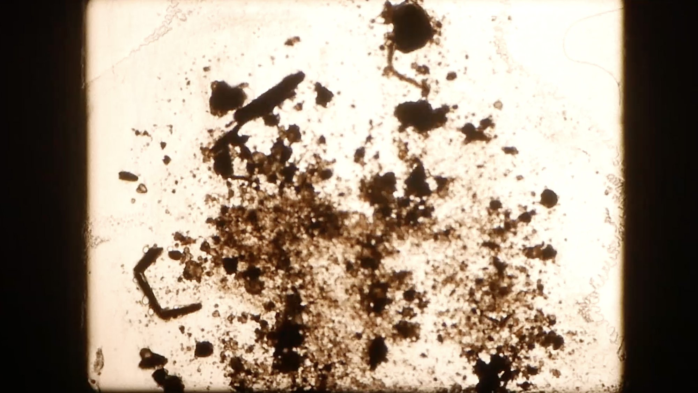
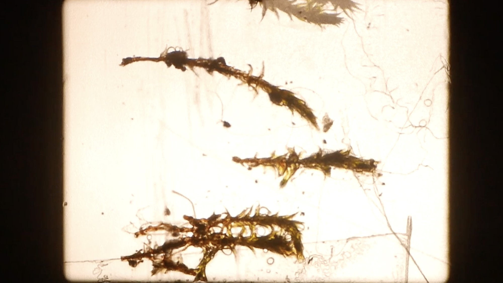
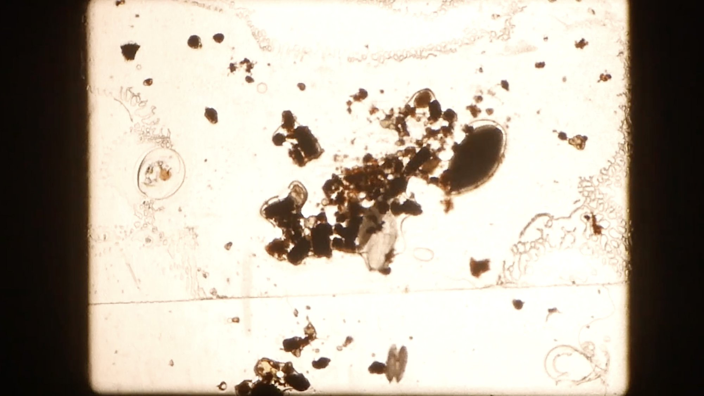
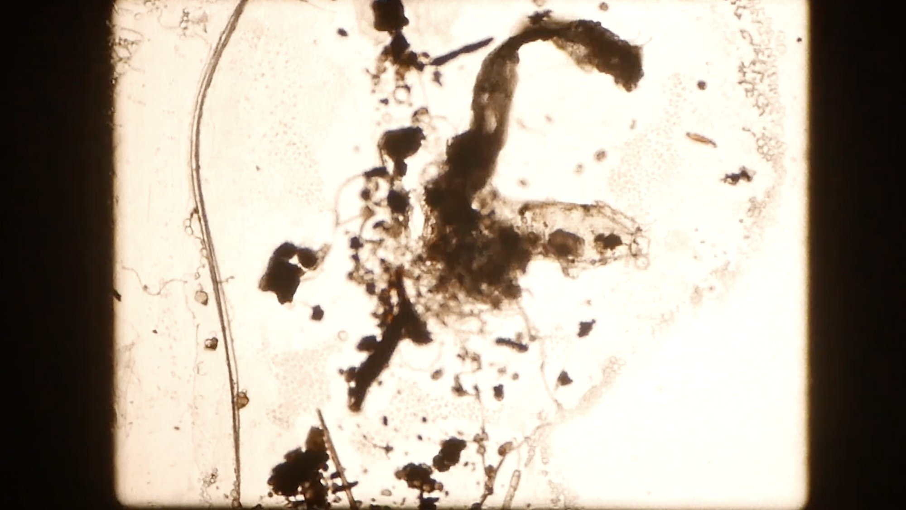
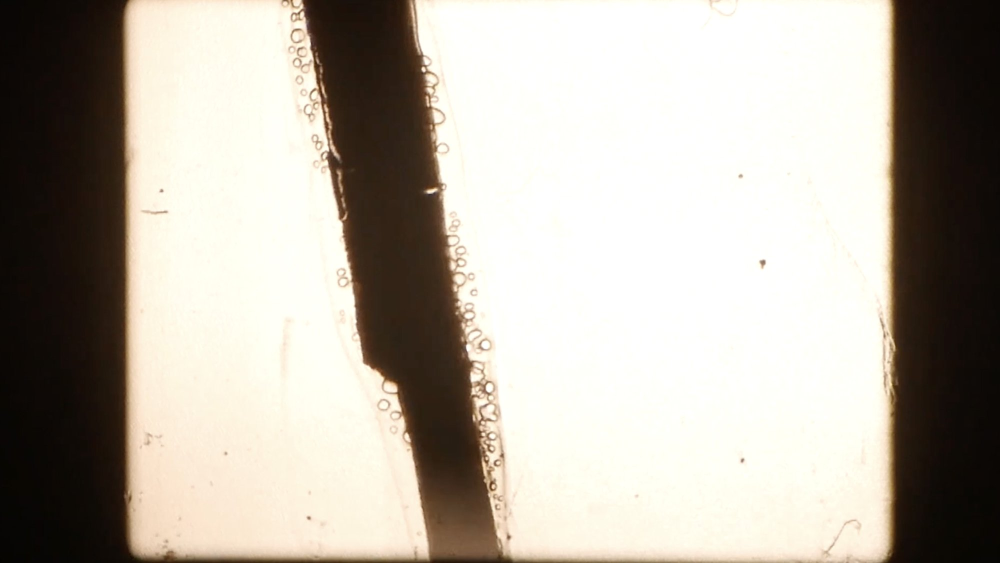
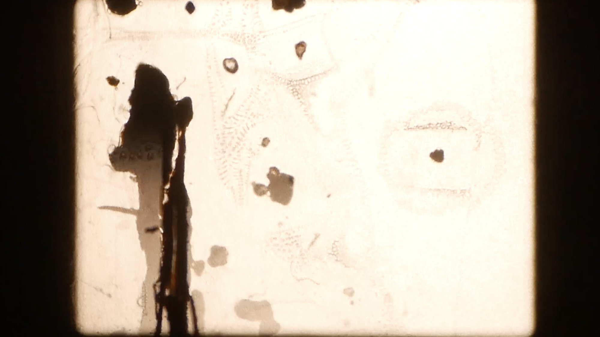
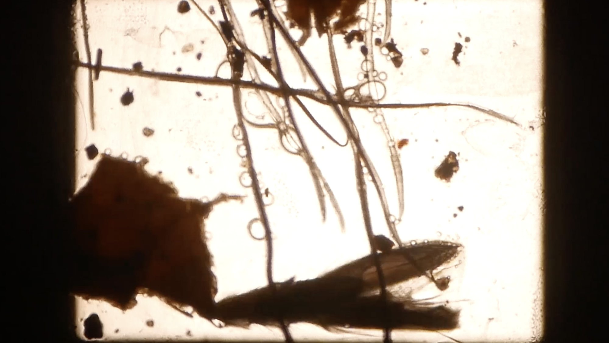

散落路徑Scattered Pathways
16mm電影膠卷、灰塵、枯落物、頭髮、碎石 16mm film, dust, debris, hair, gravel
2022
散步八公里，拾起灰塵。
在不一樣的尺度裡，觀看城市廢棄。
Walking eight kilometers, picking up dust.
Observing urban abandonment from different scales.
16mm電影膠卷、灰塵、枯落物、頭髮、碎石 16mm film, dust, debris, hair, gravel
2022
散步八公里，拾起灰塵。
在不一樣的尺度裡，觀看城市廢棄。
Walking eight kilometers, picking up dust.
Observing urban abandonment from different scales.







©2026 Ting-Wen You. All Rights Reserved.